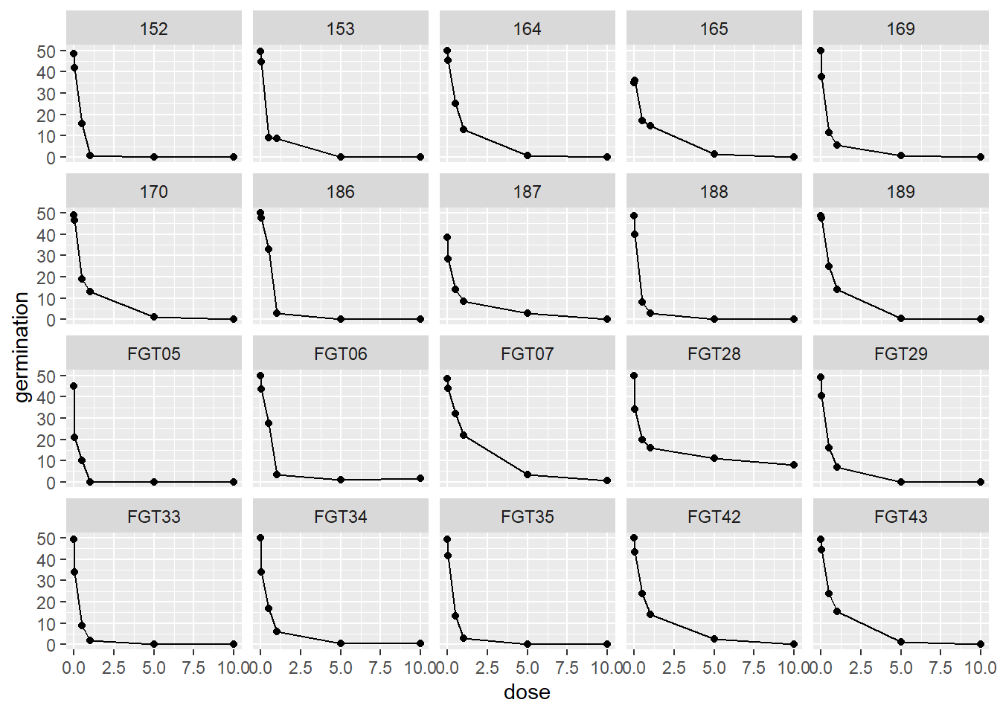
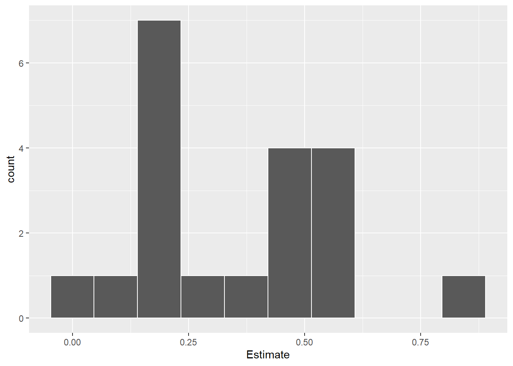

library(gsheet) # Importa planilhas do Google Sheets
library(ggplot2) # Gráficos
library(tidyverse) # Manipulação de dados (dplyr, tidyr etc.)
library(lme4) # Modelos lineares mistos
library(car) # Função Anova para modelos mistos
library(drc) # Ajuste de modelos dose-resposta (log-logístico)
library(ec50estimator) # Estimativa automatizada de EC50regressao
Análise de regressão
Introdução teórica
A análise de regressão é utilizada quando se deseja avaliar a relação entre uma variável independente (ou preditora) e uma variável dependente (ou resposta). No caso da regressão linear, o modelo assume que há uma relação linear entre as variáveis. A equação geral é:
Y=β0+β1X+ϵ
Já a regressão não linear é usada quando os dados não seguem um padrão linear. Um exemplo comum em estudos de sensibilidade é o modelo log-logístico de três parâmetros (LL.3), que é frequentemente usado para modelar respostas a doses crescentes, como a inibição da germinação por fungos.
Regressão linear simples por experimento
Objetivo
Avaliar o efeito de diferentes níveis de inóculo de sementes sobre o número de plantas emergidas (variável resposta nplants) em três experimentos independentes (exp), por meio de modelos de regressão linear simples.
Importação e visualização dos dados
Foi utilizado um conjunto de dados (estande) com três experimentos avaliando o efeito do percentual de inóculo de sementes (trat) sobre o número de plantas emergidas (nplants).
library(gsheet)
estande <- gsheet2tbl("https://docs.google.com/spreadsheets/d/1bq2N19DcZdtax2fQW9OHSGMR0X2__Z9T/edit?gid=401662555#gid=401662555")A visualização inicial mostra os pontos de cada experimento com ajuste de linha de regressão linear:
view(estande)
#trat = nível de inóculo na semente
library(ggplot2)
estande |> ggplot(aes(trat, nplants))+
geom_point (color = "yellow") +
geom_smooth(method = "lm", se = TRUE,
color = "orange") +
facet_wrap(~exp) +
theme_minimal() +
labs (x = "% de inóculo de semente",
y = "Número de plantas")Ajuste do modelo linear por experimento
library(tidyverse)
#Experimento 01
exp1 <- estande |>
filter(exp == 1)
m_exp1 <- lm(nplants ~ trat, data = exp1)
summary(m_exp1)
Call:
lm(formula = nplants ~ trat, data = exp1)
Residuals:
Min 1Q Median 3Q Max
-25.500 -6.532 1.758 8.573 27.226
Coefficients:
Estimate Std. Error t value Pr(>|t|)
(Intercept) 52.5000 4.2044 12.487 1.84e-11 ***
trat -0.2419 0.1859 -1.301 0.207
---
Signif. codes: 0 '***' 0.001 '**' 0.01 '*' 0.05 '.' 0.1 ' ' 1
Residual standard error: 15 on 22 degrees of freedom
Multiple R-squared: 0.07148, Adjusted R-squared: 0.02928
F-statistic: 1.694 on 1 and 22 DF, p-value: 0.2066#Experimento 02
exp2 <- estande |>
filter(exp == 2)
m_exp2 <- lm(nplants ~ trat, data = exp2)
summary(m_exp2)
Call:
lm(formula = nplants ~ trat, data = exp2)
Residuals:
Min 1Q Median 3Q Max
-25.7816 -7.7150 0.5653 8.1929 19.2184
Coefficients:
Estimate Std. Error t value Pr(>|t|)
(Intercept) 60.9857 3.6304 16.798 4.93e-14 ***
trat -0.7007 0.1605 -4.365 0.000247 ***
---
Signif. codes: 0 '***' 0.001 '**' 0.01 '*' 0.05 '.' 0.1 ' ' 1
Residual standard error: 12.95 on 22 degrees of freedom
Multiple R-squared: 0.4641, Adjusted R-squared: 0.4398
F-statistic: 19.05 on 1 and 22 DF, p-value: 0.0002473#Experimento 03
exp3 <- estande |>
filter(exp == 3)
m_exp3 <- lm(nplants ~ trat, data = exp3)
summary(m_exp3)
Call:
lm(formula = nplants ~ trat, data = exp3)
Residuals:
Min 1Q Median 3Q Max
-26.5887 -3.9597 0.7177 5.5806 19.8952
Coefficients:
Estimate Std. Error t value Pr(>|t|)
(Intercept) 95.7500 2.9529 32.425 < 2e-16 ***
trat -0.7634 0.1306 -5.847 6.97e-06 ***
---
Signif. codes: 0 '***' 0.001 '**' 0.01 '*' 0.05 '.' 0.1 ' ' 1
Residual standard error: 10.53 on 22 degrees of freedom
Multiple R-squared: 0.6085, Adjusted R-squared: 0.5907
F-statistic: 34.19 on 1 and 22 DF, p-value: 6.968e-06Foram conduzidos três experimentos independentes para avaliar o efeito do nível de inóculo aplicado às sementes sobre a emergência de plantas. Para cada experimento, foi ajustado um modelo de regressão linear simples, considerando o número de plantas emergidas como variável resposta (nplants) e o percentual de inóculo como variável explicativa (trat).
No Experimento 1, não foi observada relação estatisticamente significativa entre o nível de inóculo e o número de plantas (p = 0,207), com baixa explicação da variância (R² = 7,1%).
Já no Experimento 2, o aumento do inóculo resultou em redução significativa na emergência (p < 0,001), com um decréscimo médio de 0,70 plantas para cada 1% de inóculo, e um bom ajuste do modelo (R² = 46,4%).
O Experimento 3 apresentou o efeito mais evidente, com redução altamente significativa da emergência (p < 0,001), uma inclinação de -0,76 e explicação robusta da variação (R² = 60,8%).
Em conjunto, os resultados indicam que o aumento do nível de inóculo nas sementes pode prejudicar a emergência de plantas, embora esse efeito varie entre experimentos. Isso sugere que fatores específicos de cada experimento, como ambiente ou manejo, podem influenciar a intensidade da resposta. Um modelo misto, incluindo o experimento como efeito aleatório, pode capturar essa variação de forma mais apropriada.
Modelo misto (com bloco como efeito aleatório)
Quando os experimentos envolvem blocos (como repetição experimental), podemos considerar o efeito aleatório desses blocos com um modelo misto. Nesse caso, foi considerado o modelo abaixo.
Esse modelo permite levar em conta a variação entre experimentos e entre blocos dentro de cada experimento.
A função Anova() fornece os valores de F e os p-valores para o efeito fixo de trat:
library(lme4)
m_misto <- lmer(nplants ~trat + (1 | exp/bloco), data = estande)
confint(m_misto) 2.5 % 97.5 %
.sig01 3.3332097 14.4218422
.sig02 7.2377419 47.8269818
.sigma 9.7314178 13.9359486
(Intercept) 43.4631239 96.0274587
trat -0.7328972 -0.4044812library(car)
car::Anova(m_misto)Analysis of Deviance Table (Type II Wald chisquare tests)
Response: nplants
Chisq Df Pr(>Chisq)
trat 46.788 1 7.909e-12 ***
---
Signif. codes: 0 '***' 0.001 '**' 0.01 '*' 0.05 '.' 0.1 ' ' 1summary(m_misto)Linear mixed model fit by REML ['lmerMod']
Formula: nplants ~ trat + (1 | exp/bloco)
Data: estande
REML criterion at convergence: 575.8
Scaled residuals:
Min 1Q Median 3Q Max
-2.21697 -0.63351 0.04292 0.67094 1.92907
Random effects:
Groups Name Variance Std.Dev.
bloco:exp (Intercept) 54.76 7.40
exp (Intercept) 377.43 19.43
Residual 134.99 11.62
Number of obs: 72, groups: bloco:exp, 12; exp, 3
Fixed effects:
Estimate Std. Error t value
(Intercept) 69.74524 11.57191 6.027
trat -0.56869 0.08314 -6.840
Correlation of Fixed Effects:
(Intr)
trat -0.111Visualização de dados
A reta de regressão ajustada com os coeficientes estimados foi visualizada através do código abaixo.
estande |>
ggplot(aes(trat, nplants, color = factor(exp))) +
geom_point()+
#geom_smooth(method = "lm", se = FALSE) +
geom_abline(intercept = 69.74524,
slope = -0.568, linewidth = 2) +
geom_abline(intercept = 43,
slope = -0.73, linetype = "dashed")+
geom_abline(intercept = 96,
slope = -0.40, linetype = "dashed")
Regressão não linear (modelo log-logístico)
Objetivo do experimento
Avaliar o efeito de diferentes doses de inóculo sobre a germinação de sementes, considerando diferentes isolados fúngicos (code), usando um modelo de regressão não linear log-logístico (LL.3) para estimar a EC50 — a dose necessária para reduzir a germinação em 50%.
Importação e visualização dos dados Descrição: Os dados contêm as variáveis
code: identificador do isolado fúngico;dose: dose do inóculo;germination: porcentagem de germinação;state: origem do isolado.
fungi <- gsheet2tbl("https://docs.google.com/spreadsheets/d/1bq2N19DcZdtax2fQW9OHSGMR0X2__Z9T/edit?gid=465348652#gid=465348652")
view(fungi)Visualização da germinação por dose e isolado
fungi |>
group_by(code, dose) |>
summarise(germination = mean (germination)) |>
ggplot(aes(dose, germination)) +
geom_point()+
geom_line()+
facet_wrap(~ code)
Interpretação: Este gráfico permite visualizar como a germinação varia com a dose para cada isolado. Em geral, espera-se uma tendência de redução da germinação com o aumento da dose, sugerindo um efeito inibitório do inóculo.
Ajuste do modelo log-logístico para um isolado específico (exemplo: FGT43)
library(tidyverse)
library(drc)
#Separar por isolado
FGT43 <- fungi |>
group_by(code, dose) |>
summarise(germination = mean(germination)) |>
filter(code == "FGT43")
#MODELO LL.3, PODE SER WP.3
library(drc)
m43 <- drm(germination ~dose,
data = FGT43,
fct = LL.3())
summary(m43)
Model fitted: Log-logistic (ED50 as parameter) with lower limit at 0 (3 parms)
Parameter estimates:
Estimate Std. Error t-value p-value
b:(Intercept) 1.219692 0.175081 6.9664 0.006069 **
d:(Intercept) 48.486911 1.456007 33.3013 5.952e-05 ***
e:(Intercept) 0.495895 0.060851 8.1494 0.003864 **
---
Signif. codes: 0 '***' 0.001 '**' 0.01 '*' 0.05 '.' 0.1 ' ' 1
Residual standard error:
1.636105 (3 degrees of freedom)AIC(m43)[1] 26.7762plot(m43)Interpretação do modelo:
Modelo: log-logístico com 3 parâmetros:
b: inclinação da curva;d: valor máximo da resposta (germinação);e: EC50 (dose que reduz a resposta à metade).
Resultados:
O modelo tem bom ajuste (erro residual 1.63).
O valor de EC50 = 0.496 indica que o isolado FGT43 é relativamente agressivo: com apenas ~0.5 unidade de dose, a germinação já cai pela metade.
Cálculo direto do EC50 para o isolado
#cálculo de EC50 - colocar modelo e quanto é o controle
ED(m43, 50)
Estimated effective doses
Estimate Std. Error
e:1:50 0.495895 0.060851Isso confirma que o isolado FGT43 tem uma alta toxicidade, afetando a germinação já em baixas doses.
Cálculo automático da EC50 para todos os isolados
library(ec50estimator)
df_ec50 <- suppressWarnings(
estimate_EC50(
germination ~ dose,
data = fungi,
isolate_col = "code",
strata_col = "state",
interval = "delta",
fct = drc::LL.3()
)
)
head(df_ec50) ID state Estimate Std..Error Lower Upper
1 FGT05 RS 0.04483863 0.01292307 0.01560462 0.07407264
2 FGT06 RS 0.54497934 0.02245235 0.49418860 0.59577008
3 FGT07 RS 0.88770190 0.08319526 0.69950114 1.07590265
4 FGT28 RS 0.22608308 0.06652044 0.07560339 0.37656276
5 FGT29 RS 0.23601581 0.02914746 0.17007969 0.30195194
6 FGT33 RS 0.10481265 0.02114857 0.05697127 0.15265404Interpretação: EC50s variam bastante entre os isolados, indicando diferenças na agressividade. Valores baixos de EC50 sugerem que o isolado inibe fortemente a germinação mesmo em doses pequenas.
Visualização dos EC50s por isolado
df_ec50 |>
ggplot(aes(reorder(ID, Estimate), Estimate))+
geom_point()+
coord_flip()
df_ec50 |>
ggplot(aes(x = Estimate))+
geom_histogram(bins = 10, color = "white")
Isolados com menor EC50 aparecem no topo (mais agressivos);
O histograma mostra a distribuição geral da toxicidade dos isolados;
Alguns isolados têm EC50s muito baixos, sendo candidatos a maior atenção.
Conclusão biológica e estatística
A regressão log-logística é adequada para modelar respostas de germinação em função da dose de inóculo, pois capta o comportamento sigmoidal esperado;
A EC50 permite comparar quantitativamente a agressividade dos isolados.
Isolados com EC50 baixos são mais impactantes na germinação e podem indicar maior patogenicidade;
A variação entre isolados reforça a importância de testes individuais em programas de seleção ou controle.